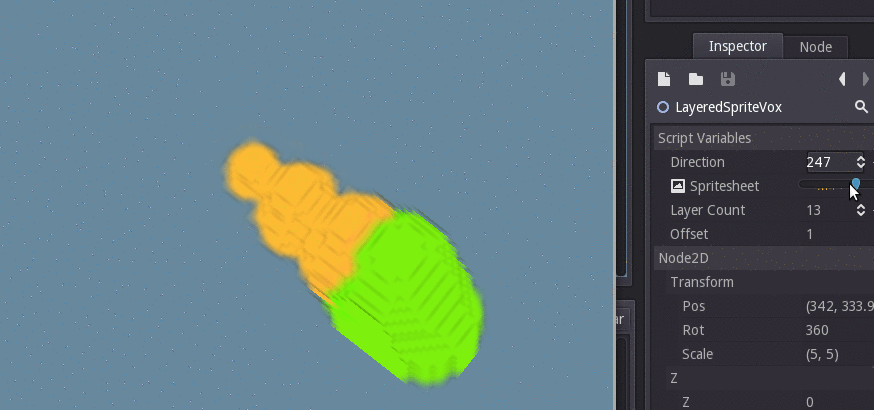

<script Modulo
    src="/js/Modulo.js"
    -src="/libraries/core.html"
></script>
<x-Page archivedid="13"pagetitle="Snippet: NIUM&#x27;s 3D effect, in Godot">

<article class="content post tag-godot tag-game-dev tag-tutorial tag-snippet">
<h1 class="title">Snippet: NIUM&#x27;s 3D effect, in Godot</h1>
<section class="post-content">
<p>Recently on /r/gamedev there was a nice article about achieving <a href="https://gfycat.com/ConsciousZanyArmedcrab">NIUM's isometric voxel-ish 3D effect</a> using layers of sprites. It's a very simple and obvious technique, you should read it if have a minute: <a href="http://www.like100bears.com/writing/2d-3d-in-gamemaker-studio">2D 3D in GameMaker Studio</a>.</p>
<p>Well, I implemented it in Godot! A hastily put-together example (island? duck head?):</p>
<p></p>
<p><a href="https://bitbucket.org/snippets/michaelb/bMdjq">Check out the snippet here.</a> It's in public domain, so feel free to use it in your projects. Use it by simply attaching it to a <code>Node2D</code>, and then assigning the Spritesheet and Layer Count to point to a horizontal spritesheet of your layers and the number of layers in the spritesheet, respectively. Personally I created a separate scene that I instance when I need it. For a "deeper" effect, you can try an offset greater than 1.</p>
<p>Note: As mentioned in the original article, its not very efficient in the general case. However, it's fine for a few smoothly-rotatable objects in an isometric environment, especially if you want precise pixel control with little hassle (as opposed to using actual 3D and rendering with pixel-y shaders). It could be optimized for rendering time, at the expense of increased memory consumption and loading time, by pre-rendering the all the directions on load, something I may add as a feature in the future to this class.</p>
</section>
</article>
</div>

</x-Page>